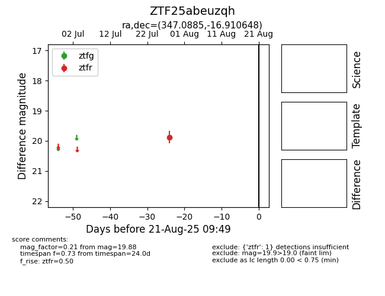

Target ZTF25abeuzqh at 2025-08-21 09:49, see:
FINK: fink-portal.org/ZTF25abeuzqh
Lasair: lasair-ztf.lsst.ac.uk/objects/ZTF25abeuzqh
ALeRCE: alerce.online/object/ZTF25abeuzqh
alt names
ZTF25abeuzqh (ztf,alerce)
coordinates:
equatorial (ra, dec) = (347.0885,-16.91065)
galactic (l, b) = (50.7869,-64.08580)
photometry
last ztfr=19.88
1 ztfr detections
